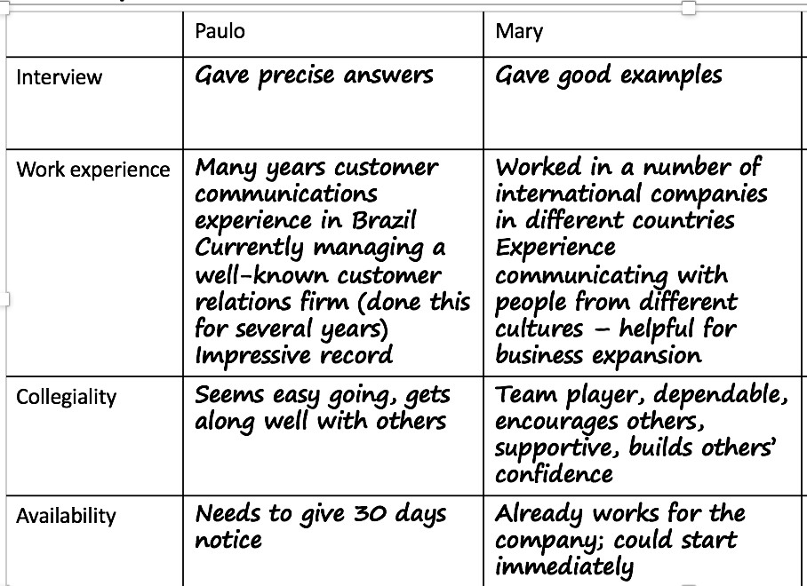
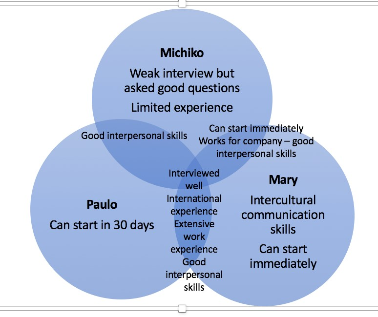

Compare means to find similarities between two or more people, ideas, events, or things. Contrast means to find differences between two or more people, ideas, events, or things.
Two tools for identifying points of comparison and contrast are:
Table
Venn Diagram
You are comparing three individuals who applied for a job to determine which is the most qualified.
Table
Ven Diagram
The example shows a comparison/contrast of three candidates – Michiko, Paulo, and Mary. Common areas are shown in between the circles. This can help you decide which candidate has the skills you need.
Write a short paragraph comparing or contrasting two people, movies, phones, or a topic of your choice. Decide on your points of comparison or contrast.